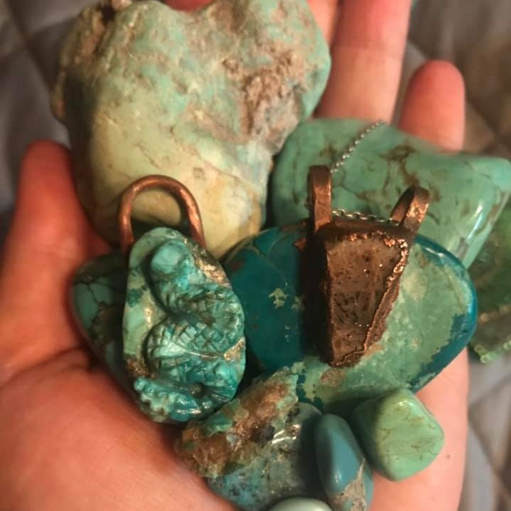

A large piece of raw, orange Alaskan agate being held against the sun. A large piece of raw, orange Alaskan agate being held against the sun. |
I often wander the beaches near me and collect seaglass as well as Alaskan Agates. I love these stones for their beautiful hues and tones. |
 Herbs hanging against a white wall on a wire drying wrack. Herbs hanging against a white wall on a wire drying wrack. |
My husband installed a new drying wrack for me! It's been extremely helpful and already being put to good use drying much of my wormwood. I can finally start harvesting for smudge sticks. |
| Raw white, black, and fire opals of various sizes in a small white bowl. |
Brand new delivery of rough Opals. I'm so excited to make some lovely creations with these! |
| A large pile of Turqoise in the palm of a hand. |
My favourite stone of all time is Turquoise. It's been my favourite since I was very young and I still have a pair of earrings that my grandparents bought me when I was about 12 years old that has Turquoise in them. |
| Large pile of stone snakes carved out of Labadorite. |
A small sneak peak at what we just got in. Some beautiful carved labadorite snakes to make pendants out of. I'm very excited to work with these beautiful carvings. |